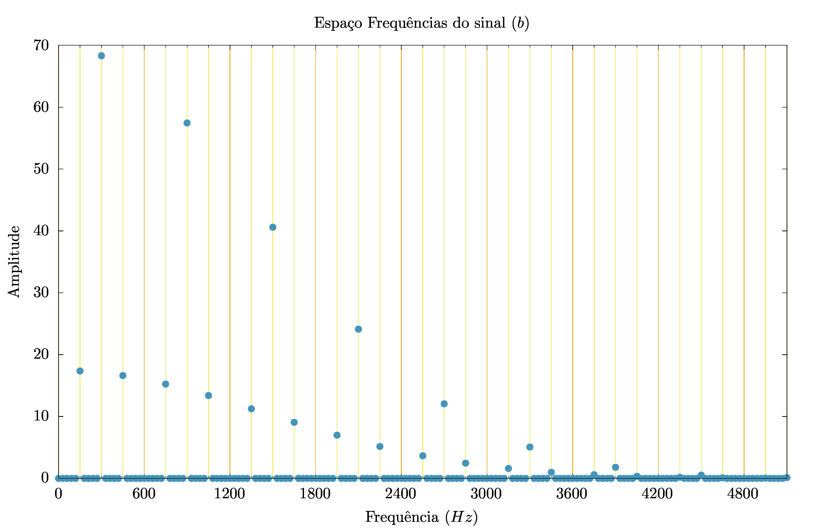

EQUACÕES DE ONDA II
Análise de Fourier
Edgard Macena Cabral Nº 11820833
Abril 2023
Introdução
Nesse projeto, estamos interessados em misturar o que fizemos nos dois projetos anteriores. Notoriamente, vamos usar a equação discretizada da onda, que, quando unida as condições de contorno, nos permite descrever ondas lineares. E observar o resultado para diferentes pontos iniciais da onda.
e a transformada discretizada de Fourier
Com o detalhe de que medimos o espectro de potências, isso é
\[P_k = \mathbb{I}(Y_{k})^2 + \mathbb{R}(Y_{k})^2 \]
A questão principal se torna: como as frequências observadas em um ponto dependem da posição inicial da onda.
Poderíamos pensar, pela natureza de um sinal \(y (t + T) = y (t)\), isto é, por ele sempre se repetir, com a posição inicial sendo apenas uma fase, que as frequências observadas não dependeriam.
Mas sabemos que séries de Fourier não são únicas e, pensando com cuidado, podemos nos lembrar que os harmônicos apresentam nós. Se posicionamos nossa observação em um ponto que, por azar, seja o nó de uma das frequências do sinal, (alás!) não poderemos observa-la.
Essa questão que buscamos entender nesse projeto.
Módulos usados
Buscamos modularizar os projetos anteriores de maneira a podermos reusa-los nesse. Os arquivos produzidos estão a seguir:
Módulo da transformada de Fourier
module fourierMod
implicit none
public :: escreveFrequencias
contains
subroutine escreveFrequencias(y_t, dt, N, file)
real*8, intent(in) :: dt, y_t(:)
real*8 :: frequencia
integer :: k, N, M, file
complex*16 :: currYk
! M é o maior natural < N/2
M = floor((N-1)/2.d0)
write(*,*) "M (M/2-1): ", M, "N :", N
do k = 0, M
currYk = Yk(k, y_t, N)
frequencia = k/(N*dt)
write(file,'(3000F20.8)') frequencia, &
real(currYk)**2 + aimag(currYk)**2
end do
end subroutine escreveFrequencias
complex*16 function Yk(k, y_t, N)
integer, intent(in) :: k
integer, intent(in) :: N
real*8:: y_t(:)
complex*16 :: i = (0,1)
real*8, parameter :: pi = acos(-1.d0)
integer :: j
Yk = (0,0)
somatoria : do j = 1, N
Yk = Yk + y_t(j)*exp(2.d0*pi*i*j*k/N)
end do somatoria
end function Yk
end module fourierMod
Note aqui que não estamos diferenciando os senos dos cossenos, observando apenas a “potência” associada a frequência
Módulo de ondas
e
module ondasMod
implicit none
public :: Gaussiana, dancaDaCadeira, propagaPresoPreso, imprimeOnda
contains
function Gaussiana(i, dx, x0, sigma)
real*8, intent(in) :: dx, x0, sigma
integer, intent(in) :: i
real*8 :: x, Gaussiana
x = i*dx
Gaussiana = exp(-1*((x-x0)/sigma)**2)
end function Gaussiana
subroutine propagaPresoPreso(ondaAnterior, ondaAtual, ondaPosterior, r, size_x)
real*8, intent(in) :: ondaAnterior(:), ondaAtual(:), r
integer, intent(in) :: size_x
real*8, intent(out) :: ondaPosterior(:)
! y_n+1(i) = 2(1-r^2)*y_n(i) - y_n-1(i) + r^2*y_n(i+1) + y_n(i-1)
ondaPosterior(2:size_x-1) =&
2*(1-r**2)*ondaAtual(2:size_x-1) - ondaAnterior(2:size_x-1) &
+ (r**2)*(ondaAtual(3:size_x) + ondaAtual(1:size_x-2))
end subroutine propagaPresoPreso
subroutine propagaPresoLivre(ondaAnterior, ondaAtual, ondaPosterior, r, size_x)
real*8, intent(in) :: ondaAnterior(:), ondaAtual(:), r
integer, intent(in) :: size_x
real*8, intent(out) :: ondaPosterior(:)
ondaPosterior(2:size_x-1) =&
2*(1-r**2)*ondaAtual(2:size_x-1) - ondaAnterior(2:size_x-1) &
+ (r**2)*(ondaAtual(3:size_x) + ondaAtual(1:size_x-2))
! Derivada na ponta livre é nula
ondaPosterior(size_x) = ondaPosterior(size_x-1)
end subroutine propagaPresoLivre
subroutine dancaDaCadeira(ondaAnterior, ondaAtual, ondaPosterior)
real*8, intent(inout) :: ondaAnterior(:), ondaAtual(:)
real*8, intent(out) :: ondaPosterior(:)
ondaAnterior(:) = ondaAtual(:)
ondaAtual(:) = ondaPosterior(:)
end subroutine dancaDaCadeira
subroutine imprimeOnda(ondaAtual, file, size_x)
real*8, intent(in) :: ondaAtual(:)
integer :: size_x, file
integer :: i
write(file, '(3000F16.8)') (ondaAtual(i), i=1,size_x)
end subroutine imprimeOnda
end module ondasMod
Programa principal
Para realizar os estudos de frequências obtidas, usamos o programa a seguir, colocado no diretório da tarefa (a) e com a observação das frequências ocorrendo em torno de \(L_{observado} = L/4\)
program tarefa_a use fourierMod use ondasMod implicit none real(8), parameter :: L = 1.d0, c = 300.d0 real(8), parameter :: r = 1.d0, dx = 1.0/200.d0, dt = dx*r/c integer, parameter :: size_x = L/dx + 1, size_t = 1/(3*dt) real(8), dimension(size_x) :: ondaAnterior, ondaAtual, ondaPosterior real(8), dimension(size_t) :: pontoGravado ! y(L/4 ,t) integer :: i ! Ajustamos as condições iniciais ondaAtual = 0.d0 do i = 2, size_x-1 ondaAtual(i) = Gaussiana(i-1, dx, L/2.d0, L/30.d0) end do ondaAnterior(:) = ondaAtual(:) ! Fazemos ponto inicial ondaPosterior = 0.d0 pontoGravado(1) = ondaAnterior((size_x-1)/4+1) ! Iniciamos gravação de L/4 do i = 2, size_t pontoGravado(i) = ondaAtual((size_x-1)/4+1) call propagaPresoPreso(ondaAnterior, ondaAtual, ondaPosterior, r, size_x) call dancaDaCadeira(ondaAnterior, ondaAtual, ondaPosterior) end do open(1, file="saida") call escreveFrequencias(pontoGravado, dt, size_t, 1) close(1) end program tarefa_a
onde apenas alteramos as condiçõs iniciais ou a propagação conforme o necessário.
Tarefa a (\(L_0 = L/2\))
Condições e resultados

Para a tarefa (a), usamos o pacote gaussiano, com nós fixos, centrada em torno de \(L_{0} = \frac{L}{2}\), com \( \sigma = \frac{L}{30}\).
Os resultados obtidos estão a seguir

Onde obsevamos que as freqências \(2n\cdot 150Hz\) estão faltando.
Conclusão sobre os resultados
A ausência de modos normais pares esperado!
Considerando o caráter da onda, com uma subida bem definida em torno de \(L = L_0\), seria estranho esperar encontrar modos pares, que estariam agindo destrutivamente justo no ponto de maior amplitude do sinal.
Por causa disso, não conseguimos notar nenhum obscuração de frequências resultante da posição que estamos observando, que deve ocorrer apenas com modos normais múltiplos de 4.
O modo fundamental observado, \(f_{fundamental} = 150Hz\), também nos é esperado! Já sabemos do projeto anterior que o comprimento de onda desse sinal é \(\lambda = 2m\) e a velocidade foi explicitada no código como \(v = 300 m/s\). Nada mais esperado que a nossa frequência fundamenetal obtida.
Tarefa b (\(L_0 = L/4\))
Condições e resultados
Para tarefa (b), apenas alteramos \(L_0\) para \(\frac{L}{4}\)
O resultado obtido está a seguir

Obsevamos que os modos normais associados a 4 vezes a frequência inicial estão ausentes. Ademais as frequências pares restantes são muito mais potentes que as frequências ímpares
Conclusão sobre os resultados
Faz sentido que uma onda cujo máximo está em \(L/4\) seja melhor representado com frequências de senos que tenham máximos no entorno desse valor. embora nunca nele.
Esse último fato pode nos ajudar a explicar os termos (muito fracos) dos modos normais ímpares. Eles parecem refletir um toque de mestre na onda, para caracterizar o máximo bem definido da Gaussiana.
Tarefa c (\(L_0 = L/3\))
Condições e resultados
Para tarefa (c), alteramos \(L_0\) para \(\frac{L}{3}\)
O resultado obtido está a seguir
Álas! Os modos normais ausentes dessa parecem bem mais patológicos.
A ordem, bonita, na verdade esconde um padrão simples: Faltam os modos normais múltiplos de 3 e 4.
Conclusão sobre os resultados
As frequência \(3n\cdot 150Hz\) estarem ausentes não surpreendem. Seus senos, em \(t = 0\) colaboram positivamente de um lado e negativamente de outro. Um comportamente que certamente faria delas um deserviço a nossa reprentação.
Os máximos mais elvados tem forma \((2 + 4n)150HZ\) para \(2 + 4n\) não divísivel por \(3\). Mas não consegui entender o porquê